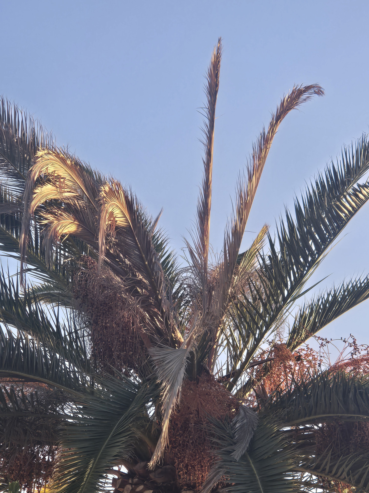

Assessments & baselines
Palm identification, condition photographs, visible findings, and written recommendations.
Licensed treatment · Owner-led · San Diego County
SDPP provides owner-led, licensed preventive treatment and continuing monitoring for mature Canary Island date palms and other valuable specimens.
Identity & baselines · Recurring plans & records · Licensed treatment · Coordinated response
SDPP field photograph · Old Escondido
Owner-operated • Pest Control Business License No. 47756 • QAL No. 175295 • Category B — Landscape Maintenance • Insured
Owner-Led Palm Stewardship
John Krause, Owner
California Pest Control Business License No. 47756
California Qualified Applicator License No. 175295
Category B — Landscape Maintenance
Insured
Owner-led palm portfolio stewardship for managed properties and valuable mature palms, including individual-palm records, recurring care planning, licensed treatment when appropriate, documentation, decline response, and qualified-contractor coordination.
Primary service
Mature Canary Island date palms are a primary focus. I assess the palm and site, then provide licensed treatment when appropriate for the label, law, palm condition, and agreed scope.

Continuing care can combine preventive treatment, repeat photographs, treatment history, and a clear schedule for the next visit.
Why early protection matters
South American palm weevil damage may be advanced before obvious crown decline. Earlier assessment preserves more options.

SDPP maintains a substantial independently documented local visual record of SAPW activity and palm loss. Dated photographs and video support earlier recognition, clearer communication, and better comparison over time.
Other services
Commercial properties, HOAs, institutions, estates, and homeowners can begin with the same clear assessment path.
Palm identification, condition photographs, visible findings, and written recommendations.
Treatment history, follow-up scheduling, condition tracking, and multi-palm planning.
Rapid-change review, recovery monitoring, sourcing guidance, and contractor coordination.
Field evidence
The public evidence pages distinguish confirmed observations, visible changes, documented outcomes, and unknown causes.

Private inquiry
Tell me about the property, the palms, and what you are responsible for. I work with managed palm portfolios, large estates, and homeowners protecting important mature palms.